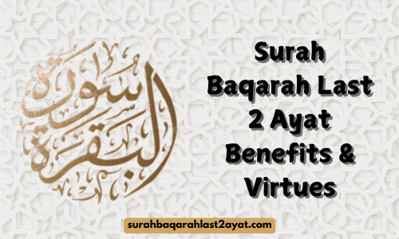

7 Benefits of Last 2 Ayat of Surah Baqarah [With References]
Opening Note
The last two ayats of Surah Baqarah have great excellence in the Holy Quran as well as Islamic tradition. These sacred words were revealed on the eve of Miraj. The recitation of these ayats will benefit you in both worldly and spiritual matters.
This article is all about the benefits and virtues of Surah Baqarah's last 2 ayat and why you should definitely take advantage of them. Before proceeding further, we want you to know an authentic hadith that explains the importance of these two ayats, which is narrated by Sayyidna Ibn Abbas (Radhi-Allahu Anh):
The Holy Prophet (Peace Be Upon Him) said that Allah Almighty has sent forth these two ayats out of the treasures of Paradise, and the Rahman had already written them by His hand two thousand years earlier than the creation of all things and beings.
Benefits of Surah Baqarah
The Prophet (peace be upon him) advised us to be in close contact with Surah Baqarah. It is stated as a “protection from Shaytan” in a hadith (Sahih Muslim).
- These two ayats boost a Muslim's faith (Iman) and make him believe that Allah is his guider and creator.
- Reciting the last two ayats of Surah Baqarah fulfills one's requests to Allah.
- A person who recites these ayats before sleeping is protected from evil.
“Whoever recites the last two ayats of Surat Al-Baqarah at night, will be sufficient for him.” (Sunan Ibn Majah 1369, Sahih Bukhari 5009, Sahih Muslim 807)
- These ayats help to shield against magic.
- Shatian (Devil) flees from any house where the last two ayats are recited for three
consecutive days.
"Indeed Allah wrote in a book two thousand years before He created the heavens and the earth, and He sent down two Ayat from it to end Surat Al-Baqarah with. If they are recited for three nights in a home, no Shaitan shall come near it." (Jami` at-Tirmidhi 2882)
- Reciting these ayats before sleep provides protection throughout the night.
- These ayats are known as the "ayats of light" anyone who recites them receives light for each letter.
Suggested: Surah Baqarah Last 2 Ayat Benefits In Urdu
Ending Note
These are the benefits and virtues of the last two ayats of Surah Baqarah that we’ve covered in this article. Therefore, everyone, whether young, a child, or old, should memorize these ayats. Reciting them once at night after the Isha prayer can grant a person these amazing benefits. In Sha Allah💖